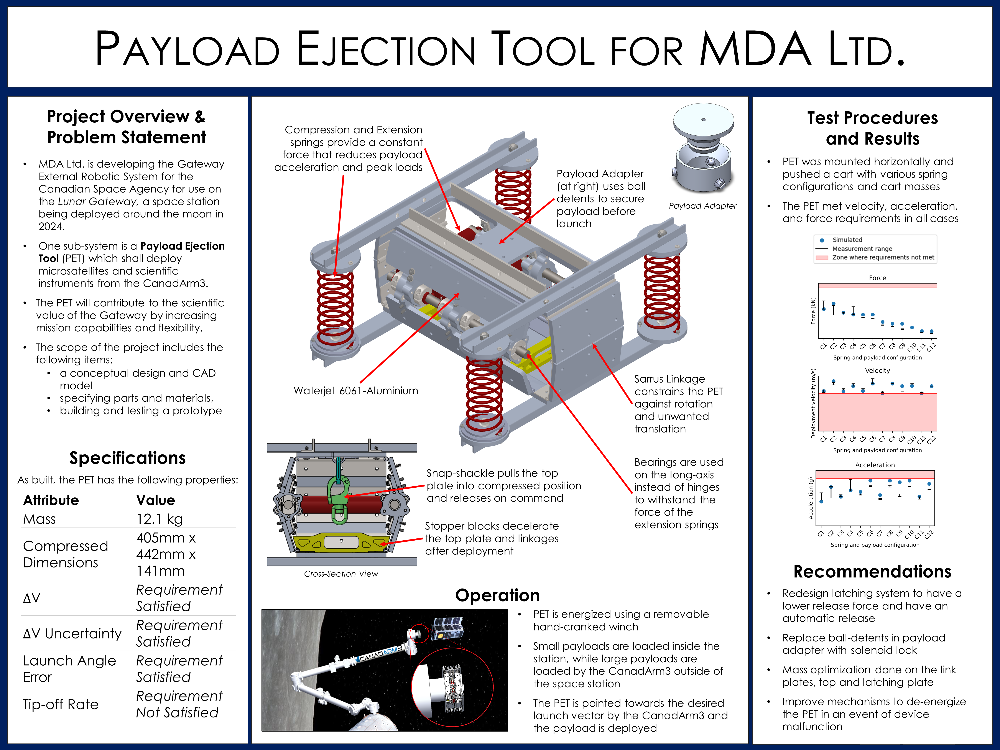
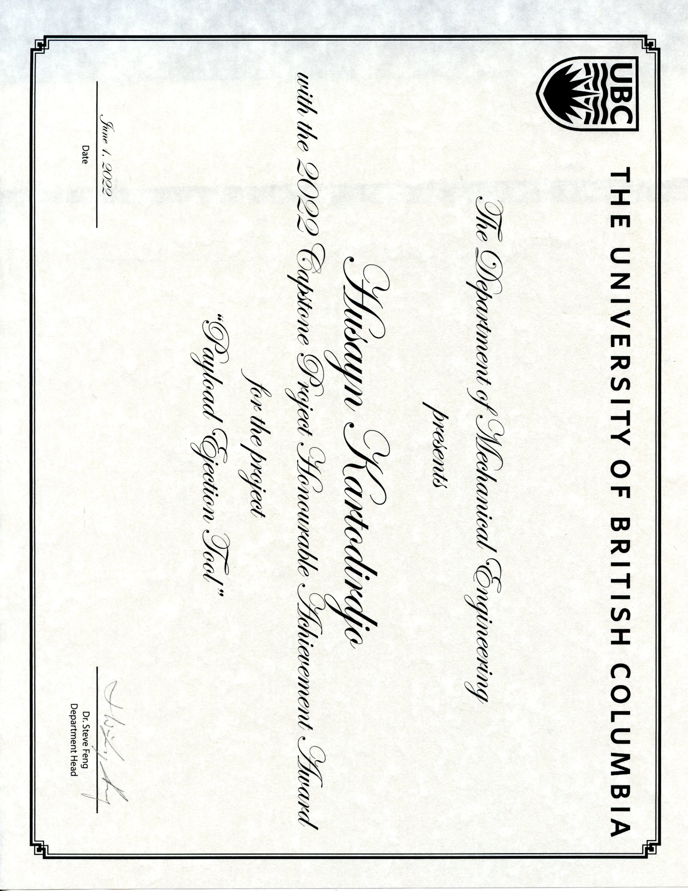

Payload Ejection Tool (PET)

The Canadian Space Agency (CSA) is a partner in an international effort to establish a deep-space habitat (known as the Lunar Gateway) to facilitate the long-term goal of the human exploration of Mars. MDA Ltd. has been contracted by the CSA to develop the Gateway External Robotic System. One sub-system, the focus of this Capstone project, is a Payload Ejection Tool (PET) which shall deploy microsatellites and scientific instruments from the CanadArm3. In doing so, the PET will contribute to the scientific value of the Gateway by increasing mission capabilities and flexibility.
Team 14 developed a full-scale prototype of the PET deployment mechanism and payload interface. The prototype successfully meets the project requirements of deploying a payload with a delta-V, deployment accuracy, and loading on the CanadArm3 all exceeding nominal thresholds, while complying with mass and volume constraints. The PET prototype employs a four-sided Sarrus Linkage to minimize payload rotation during deployment and uses a combination of compression and extension springs to exert a constant force on the payload during deployment. This constant force system allows for a smaller PET and lower loads on both payloads and the CanadArm3. The harsh environment of deep space was considered during all phases of the design process.
 